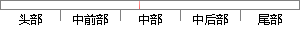

其中α∈[0,∞)是权衡范数惩罚项Ω和标准目标函数J(X;
片段位置图

相似结果|
相似片段 1：)可以等价地改写为如下的目标函数：一弛删=口叼呼Hy-Xelll+A·萋胤(2．2．3)其中A1是正则参数，用来控制LASSO解的稀疏性。由于Ll-范数惩罚的自然属性，LASSO能够同时实现连续的变量
相似片段 2：)(4．21)其中A∈『o，1)为权衡系数。注意到其中4．19式为非线性约束，我们试图将这个非线性约束通过在目标函数中加入惩罚项的方式去掉，这样可以提高规划计算的性能(规划的所有约束为线性形式)。设p为惩罚
|
※ 片段修改建议 ※
近似词参考：- 其中：此中 个中
- 权衡：衡量 掂量
- 惩罚：赏罚 责罚 处罚
- 标准：尺度
- 目标：方针 目的
系统自动生成语句：此中α∈[0,∞)是衡量范数赏罚项Ω和尺度方针函数J(X;
注：本片段修改建议为系统自动生成，仅供参考。